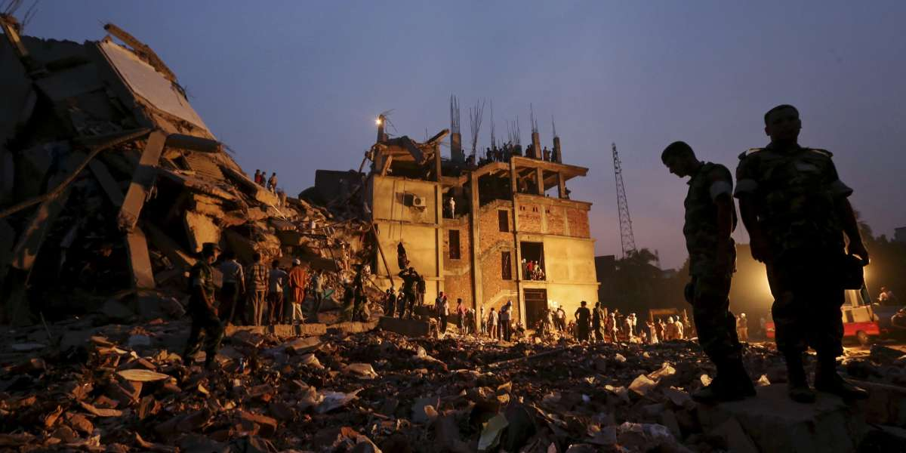
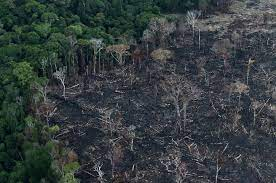

Disasters are serious disruptions to the functioning of a community that exceed its capacity to cope using its own resources. Disasters can be caused by natural, man-made and technological hazards, as well as various factors that influence the exposure and vulnerability of a community.